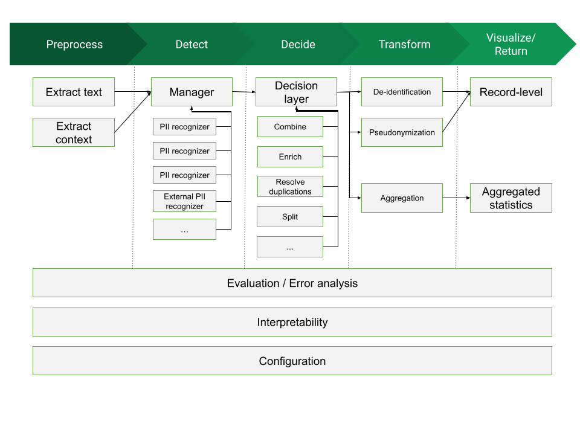

PII Data Specification
1. Version 0.4.1
2. Overall architecture
The general structure of a framework dealing with PII management could be visualized as the following diagram:

There are up to four processing blocks for such a framework:
- Preprocess: block whose mission is to read a document in an arbitrary format (a Word Document, a Web page, a PDF file, etc) and produce a normalized version, retaining only a simplified version of the high-level structure and all the text data.
- Detect: block in charge of processing input data (usually in text format) and performing detection of candidates to be assigned as PII data. This block uses as input:
- source document: we will consider a normalized data format that conveys the raw text contents, together with some structural information. (which can provide useful hints to the PII Detection modules about the relations between text chunks)
- configuration information: specification of contextual elements affecting detection (e.g. text language, applicable countries, etc)
- component information: the set of available PII Detectors that can be used (assuming we take a modular approach, there might be a database of "pluggable modules" we can use for PII detection). Each Detector will define the type and parameters of PII that can detect.
- Decide: block that takes a number of PII candidates, as produced by the Detection block, and consolidates that information, producing as final result the set of PII elements in the text that need to be addressed. In the process it might combine PII candidates, choose among overlapping PII candidates, reject others, etc. This block uses as input:
- Candidate list: A list of detected PII candidates
- Configuration information, as provided by the Decide block (language, countries, etc)
- An optional purpose/application scenario, to guide the decisions
- Context information, as defined in its own configuration. This might include: requirements on PII specificity, sensitivity and scarcity, applicable regulations, etc
-
Transform: This is the block that takes the decided PII entities, and acts upon them, depending on the intended purpose. There can be different Transformation blocks, all of them sharing the same interface but providing different outcomes. Some examples are:
- De-identification: removal of PII data from source material, possibly replacing it with anonymous placeholders
- Pseudonymization: substitution of PII information by opaque identifiers that preclude attribution to subjects
- Aggregation: compute aggregates of PII elements for e.g. statistical purposes, or to identify possible inconsistencies.
- Auditing and explanation: track PII decisions and be able to explain them.
- Anonymization: modify the text to eliminate decided PII entities. Depending on options they can be replaced by placeholders, dummy values, generated fake PII data, etc
-
Visualize, evaluate, interpret:
- Record level: enable browsing the input data and highlight/examine PII decisions.
- Evaluation: provide the capability to assess the performance of detection and/or decision, possibly by using a ground truth evaluation dataset, and estimate precision values.
- Interpretability: Provide the capability to interpret the decision process (e.g. why a certain span was decided to be detected as PII and additional metadata on the decision)
- Analytics: provide the capability to extract and visualize aggregated statistics on decided PII and their associated parameters
Note that the full process of performing PII recognition on documents could be considered as the combination of the steps Detect + Decide
- Detection is the first phase, in which matches are done
- Decision is the second phase that consolidates all detected PII instances
2.1. Description of possible use cases
This is a non-comprehensive enumeration of possible transformation use cases:
- PII redaction prior to ML model training (e.g., prior to training LLMs)
- Pseudonymization of clinical notes for secondary analysis
- Realtime redaction of PII from system logs
- Redact textual PII from images, forms, PDFs etc.
- PII de-identification on semi-structured data, e.g., specific areas in a JSON file, XML, free text columns in tabular data.
- Semi-automated PII removal (human in the loop)
- Classify documents based on whether they contain PII
3. Specification interfaces
The main interfaces to be specified are those that act as boundaries between architecture blocks:
- interface between preprocessing and detection
- interface between detection and decision
- interface between decision and transformation
It might be possible to also define some interfaces internal to one block, so that the block can be decomposed into modular elements (e.g. for pluggable detectors inside the Decide block)
4. Specification types
At any given interface, we can envision three types of specification:
- A data specification: syntax & semantics of the data structures that will be sent through one of the interfaces
- A program specification: program interfaces to let components call or be called across the interfaces. This would need to fix an initial default programming language (e.g. Python) to be able to instantiate such program interface; additional languages might be defined later
- An API specification, as a programming language-independent way of interchanging data information across interfaces. This would use a definition such as an OpenAPI specification so that it can be applicable regardless of the programming language; to this aim the data specification would be instantiated into a JSON schema or similar
Note that this is a nested structure: the Data specification is the minimum required element; on top of that we can add the Program specification (or a number of them, for different programming languages) and over it the API specification (or we could also add the API specification directly over the Data specification, and leave a program specification undefined)
5. Data Specification
Taking the interfaces of the Detect block as a central point, we can define:
- as input, a Source Document, either generated directly or via the Preprocessing block (note that this source document is the output data specification for the Preprocessing block)
- as output, a PII collection, containing a description of PII elements. A subspecification inside it is the PII Detector, describing a block producing PII elements.
The Preprocess block defines its output data specification (as a Source Document), but its input data specification is not standardized, and will depend on the available modules and their capabilities to process document formats.
The Decision block uses the PII Collection data specification as both input and output (with an enlarged data specification in output, incorporating additional information resulting from the decision). Then the Transform block uses both a PII collection and a Source Document as input; its output depends on the transformation done.
6. Source document
We need to balance two conflicting requirements:
- an easy format to work with: it needs to be machine-processable but also amenable to human editing and reading
- an expressive format: able to reflect (at least to some level) the document structure, since that structure might be important to connect PII elements
There are quite sophisticated "Layout" formats for text documents: Word documents (Office Open XML aka OOXML), PDF files, RTF, ODF (Open Document), etc. They are very complex, with specifications compressing many pages, since they allow the complete and precise specification of all aspects of document layout, structure and presentation. They would, of course, offer the greatest nuance in determining the relationships between the text chunks they contain[^1], but would be too difficult to handle for our purpose of consolidating a data interchange format for PII processing that has "reasonable" complexity. There are also image documents (PDF, PNG, JPEG, …), with non-textual PII like people's faces, fingerprints, medical scans or signatures, which we do not consider at all at this point.
Instead, we are aiming at a simpler solution. As a very minimum, a document can be considered as a collection of text chunks. How those chunks are structured is what generates the model to be represented. In general terms, we will consider three main document model types:
- a sequence model: a document is composed by a list of consecutive chunks
- a tree model: a hierarchical top-down structure relates text chunks one to another, so that chunks can be nested
- a table model: a 2-D structure (i.e. something that can be expressed as rows and columns, with the implicit assumption of some semantic linking across those rows and columns)
There might be mixed documents, which contain e.g. both tree and table sections, or other structures.
The general shape of a source document is then given by a document metadata header plus a set of document chunks. A chunk is intended to contain a portion of the document with self-contained data; the exact shape of a chunk depends on the document model type.
6.1. Document header
The document header contains metadata applicable to the full document. It is divided into sections, each one containing dictionary-like metadata.
The following sections are defined:
document: contains relevant information (metadata) describing this particular document; a non-exahustive list of possible fields (all of them optional exceptid) is:id: an arbitrary string acting as an identifier for the document. If the document belongs to a dataset, it should be unique across all documents in the dataset.type: the model type for the document (sequence, tree, table) The default value, when the field is not present, is sequencedate: an ISO 8601 date defining the creation date of the documentmain_lang: an ISO 639-1 code describing the language the document is in. For documents containing more than one language, it should express the most frequent language in the document.other_lang: a list of ISO 639-1 codes indicating other languages present in the documentcountry: a list of one or more ISO 3166-1 country codes for which the document may be applicable (this might be used to further define the applicability of country-dependent PII elements)title: a title for the document
dataset: metadata describing the whole dataset this document belongs to (so their fields are applicable to all documents in the dataset).
Additional sections may be defined for specific document types.
7. Iteration interfaces for source documents
Once the Source Document has been specified, we can define program interfaces to iterate over a document, producing document chunks. Two different iteration interfaces have been defined for this data structure:
- structural iteration: this is the native iteration for the document, which produces elements revealing its intrinsic data structure (therefore the objects delivered in the iteration may differ across document types, sequence, table, tree)
- full iteration (or flat iteration): this iteration interface flattens the document structure and always delivers a linear sequence of chunks, regardless of the document type.
An additional difference between the two iteration modes appears in the content of the contextual information delivered within each chunk:
- In structural iteration, the context fields for a chunk will not contain any information regarding the rest of the document (since the structure is already given by the iteration), only semantic information inherent to the chunk
- A chunk context in full iteration, however, may contain context fields that refer to other chunks or to the full document (depending on its structure).
The following sections detail these iteration interfaces for each document type.
7.1. Sequence documents
7.1.1. Structural iteration
A sequence document is divided into independent, adjacent chunks. Each chunk could be conceptually considered as one document paragraph (though that split is not strictly defined; it might be possible for a document to contain chunks spanning more than one typographical paragraph, or to split a very long paragraph into more than one chunk).
Structural iteration for these documents is simply a linear sequence of chunks. Each chunk is a dictionary containing up to three elements:
- id: an arbitrary string that should be unique per document. Its mission is to make it easier later on to map detected PII instances to the chunk they are part of
- data: a text section that contains the textual contents of the chunk. It will be a string containing UTF-8 raw text. It can contain newlines, blank lines or spacing (to be considered as part of the text structure), but no formatting or layout contents (it is assumed that exact formatting & layout is lost when creating the source document for PII processing – this is a price we pay for simplicity)
- context: an optional element that, when present, contains a dictionary of context fields specific for the chunk, intended to provide additional data to help in the detection and decision process. Note that the context is not formally part of the chunk, and the possible fields present are not specified (they depend on the document original format and on the capabilities of the software that extracts it).
In its simplest form, the content of one chunk is, as mentioned, a document paragraph. But exactly how those paragraphs are determined is application-dependent. And in any case joining together the data elements in all chunks should recover a text representation of the original document.
7.1.2. Full iteration
The full iteration for sequence documents is quite similar to the structural iteration (given that the document structure is flat). It produces a series of chunks, each one of them having up to three elements:
-
id: a unique string for the chunk (there is no guarantee that is the same as the id in structural iteration)
-
data: the same contents as in the data field in structural iteration
-
context: an optional element that, when present, contains a dictionary with the same fields as in structural iteration, plus up to three types of context structure, all of them optional:
- global: it will be a link/transposition of the information in the document header, as described above
- before: the data content from the chunk preceding this one
- after: the data contents from the chunk following this one
The addition of these three new context elements (over the possible context already present in the structural iteration) allows a module processing a full iteration to, in most cases, treat each chunk as an isolated data piece, avoiding the need to maintain and update document state as chunks are processed.
Note that the context element of the chunk is a logical one, and need not be present in a static representation of the chunk, or when sent or streamed, since it would repeat information unnecessarily. Instead, it would be generated on the fly by an appropriate PII processing module, so that processing elements down the line have direct access to that context when processing a chunk, even when in streaming mode.
7.2. Tree documents
In this document type we are trying to preserve two main structural relations between text chunks:
- an "is-contained-in" relation: a text chunk can be considered as semantically contained within another chunk
- an "is-next-to" relation: a text chunk has a relation of being after or before another text chunk
These two relationships can be nested and combined at will. They alone can be enough to describe many of the links that we could need to establish between text chunks (not all of them, but hopefully enough for PII determination).
7.2.1. Structural iteration
- A document is considered as a sequence of subtrees
- The tree is split by first-level branches (chapters/sections); each element
produced when iterating is either
- an isolated top-level paragraph
- a full subtree, which contains nested elements, according to the hierarchy. Each element (chunk) in the subtree can contain a (text) payload, a subtree of elements, or both
- Iteration produces the sequence of subtrees (a subtree is typically rendered as a nested dictionary)
When iterating, then:
- A document produces a sequence of chunks
- Each chunk contains a small dictionary with 2 to 4 elements:
- id: an arbitrary string that should be unique per document (same as for sequence documents)
- data: a text section that contains the textual contents of the chunk (same as for sequence documents)
- context: (optional) a section that, as in sequence documents, may contain document-specific context fields for the chunk
- chunks: (optional) if the current chunk contains subchunks below in the hierarchy, this element contains a sequence of them. This can be nested as needed.
A chunk position in the document hierarchy (its "level", with 1 being a top-level chunk) could be deduced unambiguously from its location in the nested sequence of chunks.
Note that there is some inherent ambiguity when constructing a document with this model: for the same document, the decision on whether two blocks should be considered "next-to" or "included-in" is not always univocal, and in some cases the content of the text blocks is what gives the semantics away. It is hoped that these variants should not affect the result of any PII Detector processors significantly.
This specification would be enough to roughly translate the overall structure of a Word document, a Web Page or a PDF file, assuming that structure can be mapped into this simple hierarchy (some documents are of course more complex than that). Also, a simple raw text document can be easily modeled as a single top-level text chunk.
7.2.2. Full iteration
The full iteration has similar mechanics as the full iteration in sequence documents:
- The document tree is traversed depth-first, and all data elements available when traversing generate a chunk
- Iteration then produces a linear sequence of these chunks
- A chunk contents has the same elements as in sequence documents:
id,dataandcontext(with no nested chunks) - The context elements have also the same global, before and after fields
plus one additional field:
- section: contains the text/data for the top-level chunk in the subtree this chunk belongs to (typically it will contain the sections/chapter title, but it depends on the stucture of the document)
- Note that here before and after may refer to chunks above/below in the tree, or in adjacent subtrees
7.3. Table documents
A Table Source Document is one in which the structure has two dimensions, i.e. it is organized mainly as rows and columns (so it can be mapped to a table), which then contain some type of data. Its semantic premise is that there exists some kind of relationships along rows and along columns, relationships that may have implications in terms of PII detection and required processing approaches. Examples of tabular documents are Excel files, or CSV files.
One particular feature of certain table documents is that they can be very large, since they may contain huge quantities of data; hence there should be a way in which they can be processed by chunks (i.e. as streaming objects), without the need to hold all their contents at once.
As all source document model types, a table document is considered as a document header, plus a sequence of document chunks.
The document header corresponds to the already defined specification, with one
modification: in addition to the already defined document and dataset
sections, there may also be a column section, providing specific information
for each of the columns in the document (considered in sequential order). It
could contain up to two subelements:
name: the column names, as a list of text stringsdescription: a description for each column, also as a list of text strings
7.3.1. Structural iteration
- A document is considered as a sequence of rows
- Each row contains a list of column values, each column value is a string with the contents of the corresponding table cell
- Iteration then produces a sequence of chunks, one per document row.
- Each chunk contains the three usual fields:
id,dataandcontext. idandcontexthave the same structure and semantics as for the other document types- However,
datais different: for table documents it contains not a text field, but a list of text fields, one per column in the row. Hence thedatafield can also be iterated upon.
7.3.2. Full iteration
For Table source documents in full iteration mode:
- A document is considered as a sequence of cells
- Cells are traversed in row-major order, top-to-bottom and left-to-right
- Traversing produces a linear list of document chunks
- A chunk contents has the same elements as in sequence documents:
id,dataandcontext - The
dataelement contains the contents of a single document cell - The context elements have the usual global, before and after fields
plus one additional field:
- column: contains the column name and index for the cell in this chunk
- Note that here before and after refer to the previous & next cell, which for the first/last cells in a row will be in another row
8. Storage format
As a support file format, we define YAML as the serialized representation of a Source Document. Those are easy to inspect visually and handle/edit manually, and also can be processed via automatic tools and packages. The YAML specification is actually somehow complex, but we would use only a subset of it: the part strictly needed to support the definitions above
- sequences, for the sequences of chunks
- mappings, for each chunk
- literal block scalars, to hold the text contents of each chunk
YAML is therefore a good candidate for storage and for manual inspection or editing. For online APIs its equivalent representation as JSON might be more appropriate, though the result would be more involved, specially with the need to serialize the text chunks, including newlines and character escaping
A serialized dump of a Source Document will contain then a YAML representation of the document, stored in a file, database or any repositiry. Its form will be a dictionary with three elements:
format: a string identifier that signals the file as being a PII Source Document. Its value ispiisa:src-document:v1header: the document general metadata, as explained in document headerchunks: a list of all the chunks generated in a structural iteration of the document
The use of structural iteration allows:
- the preservation of the document structure, which then can be regenerated when the document is read from the file
- space savings by not including the context fields present only in the full iteration
Note that context fields that are present in the structural iteration will be dumped into the file.
The PIISA repository contains:
- an example of such a Source Document.
- a Python module developed to read & write this format, as well as produce structural & full iterators from it.
9. PII Collection
A PII collection is the result of running a set of PII detectors on a source document. This result takes the form of a header + a list of detected PII instances.
9.1. Header
The header contains generic metadata that affects all the PII instances in the collection. Elements of this metadata are:
date: a timestamp on when the process was runformat: a string indicating the format the data is in. E.g.pii:pii-collection:v1detectors: a dictionary describing all detectors (i.e. subsystems or packages) employed to produce the list. Each entry has as key adetectorId(an arbitrary string), and as value a dictionary with fieldsname: the name of the packageversion: the package versionsource: a string defining the origin of the package (e.g. a vendor or an organization name)url: an address used as reference for the package (e.g. a website or a GitHub repository)method: an optional string defining the process used for detection, e.g.Regex,NerModel,Regex+Context,Checksum, etc
9.2. PII instance
A PII instance describes one recognized PII entity. It can be considered as a dictionary containing three types of information:
- PII Description: set of fields characterizing the instance
type: a string denoting the broad class of PII this instance belongs to. Typically a set of PII types will be predefined so that it can be shared across systems.subtype: certain PII classes may have optional subtypes, which help qualify its meaning. For instance, theGOV_IDtype might have as subtypes "driving license", "passport number", etcvalue: the text string from the document containing the PII Instance, as extracted by the detectorlang: the ISO 639-1 code of the language the document chunk (and possibly the PII instance) is incountry: the ISO 3166-1 code of the country that is relevant for the PII Instance, if any. E.g. aCREDIT_CARDnumber PII may have an associated country, while aBITCOIN_ADDRESSPII has not.- PII Location: information used to place the PII instance inside the document it belongs to
docid: the id of the document (optional, used if the PII Collection refers to more than one document)chunkid: the id of the document chunk the PII instance belongs tostart: position of the start of the PII instance inside the document chunk (measured as number of characters from the chunk start)end: position corresponding to one character beyond the end of the PII instance inside the document chunk (note that if the PII instance is right at the end of the chunk, this value will point beyond the chunk). The relation end = start + length(value) always holds- PII Detection: information characterizing the detection process (it can help later in the evaluation by the Decision module)
detectorid: the identifier for the detector that produced this PII instance, using the key defined in the Collection headerscore: an optional floating point number between 0.0 and 1.0 that gives a measure of the confidence of the Detector on this PII instance. Each detector has its own way of assessing such confidence, so scores are not necessarily comparable across detectors.
9.3. File format
When formatting a PII Collection for storage or transmission, any format capable of preserving its structure can be used. For the ease of compatibility with most REST-type interfaces, two formats can be proposed:
- full format, for storage or local processing: contains the PII Collection as one single JSON object with two subobjects:
metadataandpiiList - streaming format: it uses NDJSON (aka JSONL) to send the data as separate, newline-delimited chunks:
- the first line contains the collection metadata, as a JSON object
- the rest of the lines contain the list of PII instances, one per line, each one containing a JSON object
Both formats carry the exact same information; they only differ in its structure
Two examples of the format are:
- Full format:
{
"metadata": {
"date": "2022-05-18T15:00:01+00",
"format": "pii:pii-collection:v1",
"detectors": {
"01": {
"name": "pii-manager",
"version": "0.6.0",
"source": "PIISA",
"url": "https://github.com/piisa"
},
"02": {
"name": "presidio",
"version": "1.2.2",
"source": "Microsoft",
"url": "https://microsoft.github.io/presidio/"
}
}
}
"pii_list": [
{
"type": "CREDIT_CARD",
"value": "4273 9666 4581 5642",
"lang": "en",
"chunkid": "36",
"pos": 25,
"detectorid": "01",
"score": 1.0
},
{
"type": "GOV_ID",
"subtype": "SSN",
"value": "536-90-4399",
"lang": "en",
"country": "us",
"chunkid": "12",
"pos": 102,
"detectorid": "02"
},
{
"type": "GOV_ID",
"subtype": "NIF",
"value": "34657934-Q",
"lang": "es",
"country": "es",
"chunkid": "1",
"pos": 10,
"detectorid": "02"
}
}
}
- Streaming format:
(note that this example shows additional newlines not present in the file itself)
{"date":"2022-05-18T15:00:01+00","format":"pii:pii-collection:c1","detectors":{"01":{"name":"pii-manager","version":"0.6.0","source": "PIISA", "url":"https://github.com/piisa"},"02":{"name":"presidio","version": "1.2.2","source":"Microsoft","url":"https://microsoft.github.io/presidio/"}}}
{"type":"CREDIT_CARD","value":"4273966645815642","lang":"en","chunkid":"36","pos":25,"detectorid":"01","score":1.0}
{"type":"GOV_ID","subtype":"SSN","value":"536-90-4399","lang":"en","country":"us","chunkid":"12","pos":102",detectorid":"02"}
{"type":"GOV_ID","subtype":"NIF","value":"34657934-Q","lang":"es","country":"es","chunkid":"1","pos":10",detectorid":"02"}
10. Notes
[^1]: Though the document formatting options can be used in many different ways, not all of them with semantic meaning